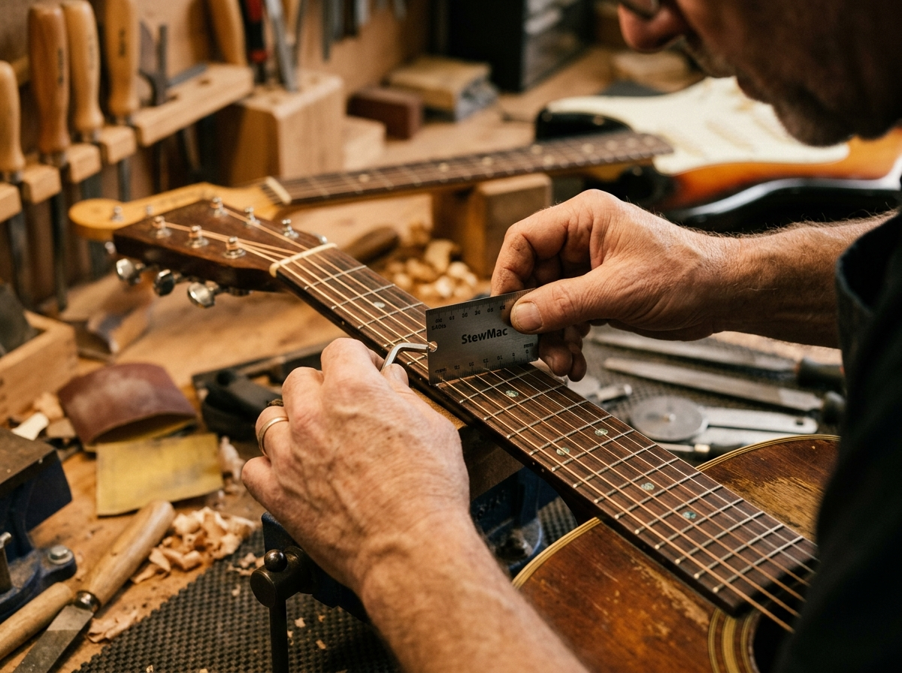

Een geweldige gitaar begint met een goede afstelling. Bij Whammy Gitaar Services in Zoetermeer zorg ik ervoor dat jouw gitaar speelt zoals jij dat wilt. Van een snelle snarenwissel tot een complete professionele setup, alles wordt met uiterste precisie gecontroleerd.

Bij Whammy Gitaar Services wordt iedere gitaar met de grootste zorg en het nodige respect behandeld. Of het nu gaat om je eerste akoestische beginnersgitaar of een high-end custom shop elektrische gitaar: elk instrument krijgt dezelfde toewijding.
Ik werk uitsluitend met hoogwaardige specialistische gereedschappen en producten (zoals StewMac meetapparatuur, radius meters, fret guards en professionele fretboard conditioners) om de best mogelijke kwaliteit en bespeelbaarheid te garanderen. Niets wordt overhaast uitgevoerd en elke stap wordt nauwgezet gecontroleerd.
Dit was altijd al een diepgewortelde passie en hobby, maar deze zomer heb ik besloten deze hobby uit te breiden naar een officiële service voor gitaristen in Zoetermeer en omstreken.
Geen onverwachte kosten. Snelle doorlooptijden zodat je je gitaar nooit lang hoeft te missen.
Kies je type gitaar en gewenste onderhoud om meteen een indicatie te krijgen.
Heb je vragen over het afgeven, wachttijd of specifieke gitaren?
Mocht u nog vragen hebben, bijvoorbeeld over andere mogelijkheden of aangepaste pakketten, neem dan gerust contact met me op. Vul het formulier in en ik reageer snel!